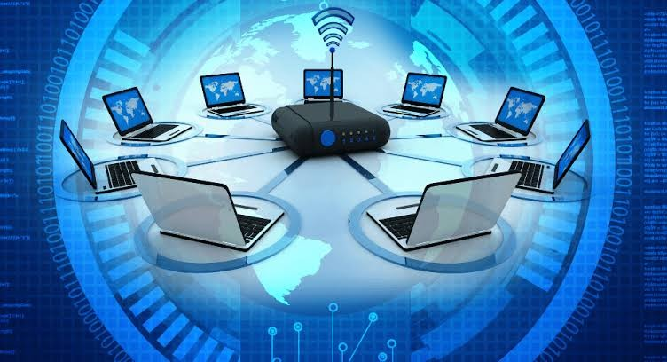

Contents
Introduction
Components of Data Communication
Type of data communication
Communication Channels
Resources
Introduction
Transferring data over a transmission medium between two or more devices, systems, or places is known as data communication. Nowadays, computing and telecommunications depend heavily on this data transmission, which makes a variety of applications conceivable, including email, video chatting, the Internet, and many more things.
Data communication specifically refers to the process of using computing and communication technologies to transfer data (the message) from a sender to a receiver — or even back and forth between participating parties.
Modern data networks all provide the same basic functions of transferring data from sender to receiver, but each network can use different network hardware and software to achieve these ends. Communication between devices adheres to industrial communications protocols, which is the set of rules that define how data is exchanged.
Components of Data Communication
A communication system is made up of the following components:
Message
A message is a piece of information that is to be transmitted from one person to another. It could be a text file, an audio file, a video file, etc.
Sender
It is simply a device that sends data messages. It can be a computer, mobile, telephone, laptop, video camera, or workstation, etc.
Receiver
It is a device that receives messages. It can be a computer, telephone mobile, workstation, etc.
Transmission Medium
Communication channels are the medium that connect two or more workstations. Workstations can be connected by either wired media or wireless media.
Set of rules
When someone sends the data (The sender), it should be understandable to the receiver also otherwise it is meaningless.
Types of data communication
Simplex Communication
It is one-way communication or we can say that unidirectional communication in which one device only receives and another device only sends data and devices uses their entire capacity in transmission.
Half Duplex communication
It is a bidirectional communication in which both the devices can send and receive data but not at the same time.
Full-duplex communication
Accommodate simultaneous two-way communication of data. The landline telephone is the most widely known means of full-duplex communication.
Serial data communications
Data is packaged into units and then sent serially to the receiver by the sender. Once it is received, the units are reassembled to recreate the original data.
Communication Channels
Communication channels are the medium that connects two or more workstations. Workstations can be connected by either wired media or wireless media.
Guided Media
In this transmission medium, the physical link is created using wires or cables between two or more computers or devices, and then the data is transmitted using these cables in terms of signals. Examples are Twisted pair cable, Coaxial Cable, and Optical fibers.
Unguided Media
The unguided transmission media is a transmission mode in which the signals are propagated from one device to another device wirelessly. Examples are Microwave, Radio wave, and Infrared
Resources
Data Communication – Definition, Components, Types, Channels
What Is Data Communication?
Images used are under copyright of their respective owners
Author: Erick C. Gaceta || BSCS-3